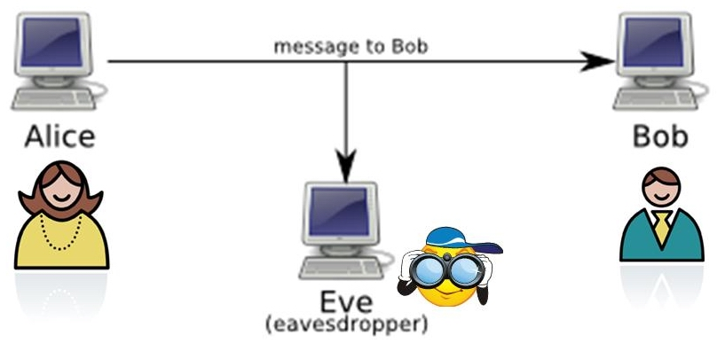
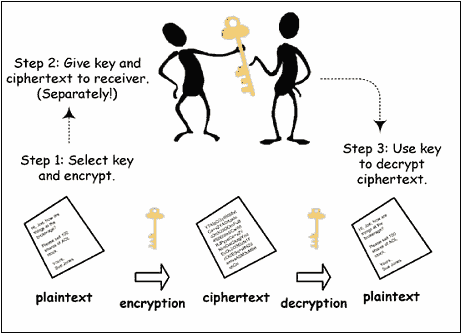
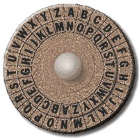
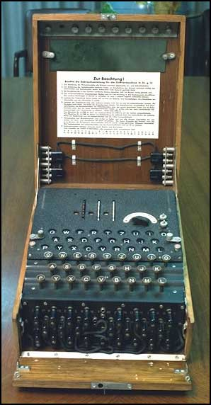
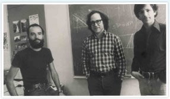
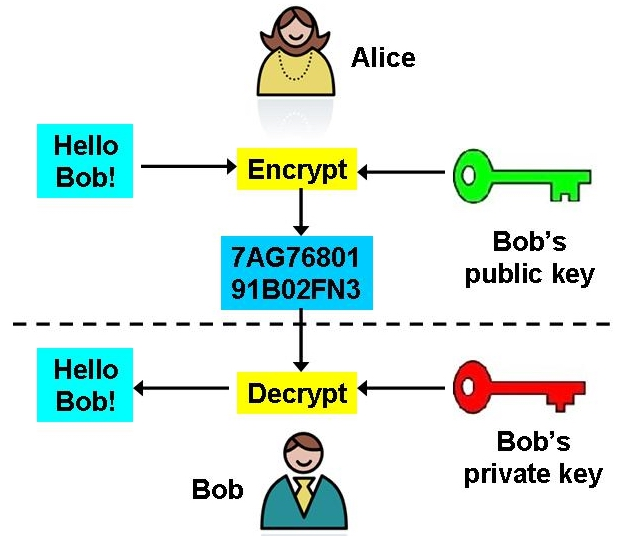

Encryption allows machines to communicate in a secure way
To introduce methods of encryption, we consider the following cast of characters:

Messages may be sent by radio, phone, email or carrier pigeon. All media are potentially insecure - radio waves can be picked up by other receivers, phone wires and computer networks can be tapped, and carrier pigeons can be captured.
One approach to secure communication is to put the message in code
Code-making and code-breaking have a long history - some notable examples:
Encryption terminology:

The idea behind Caesar Codes is letter substitution. One strategy uses rotation: turn the inner wheel and then replace the outer letters (plaintext) with those in the inner wheel (ciphertext):

| plaintext: | CAESAR |
| ciphertext: | PNRFNE |
Caesar actually used a rotation of 3, so “ATTACK” was sent as “DWWDFN”
Another popular Caesar code, called rot13 (rotate the wheel by 13 steps), is used on the Internet to hide things from inadvertent reading, such as movie spoilers or dirty jokes
Send a message to your neighbor using the following form - note that this form converts the string to uppercase and only rotates the letters, leaving numbers, punctuation and other characters unchanged:
How can we use the ASCII table to expand the characters we can encode?
Ciphers based only on letter substitution are easy to break, for example, by analyzing the frequency of occurrence of letters in the coded message
A Vigenere Cipher spoils the statistics of a simple Caesar cipher by using multiple Caesar ciphers. The technique is named for its inventor, Blaise de Vigenere from the court of Henry III of France in the sixteenth century, and was considered unbreakable for some 300 years!
Using a Vigenere Cipher to encrypt a message:
It helps to have a table of all the rotations:
Encryption using a Vigenere Cipher with the keyword "CAT":
| keyword: |
CATCATCATCATCA
|
| plaintext: |
ATTACK AT DAWN
|
| ciphertext: |
CTMCCD AM DTYN
|
Hmmmm... the two T's in “ATTACK” are encrypted differently, and the letter “A” is encrypted four times, yielding three different results (C, A and T) - Why?

The Vigenere cipher is an example of a polyalphabetic cipher
The Germans' Enigma machine also used a polyalphabetic cipher that they thought was unbreakable. The Enigma machine looked like a manual typewriter with keys and hammers, but internally the keys were attached to drums that implemented letter substitutions by mapping the keys to different hammers. There were 3-4 rotors that did the substitutions and after each letter was typed, the rotors turned like a car odometer (the rightmost fastest, and so on).
The British stole one of the machines and needed the keyword (settings of the rotors) to break the code. A group of mathematicians led by Alan Turing (including quite a few women!) analyzed the transmissions and eventually cracked the code. This was a major turning point in the war, and the Allies went to enormous effort and sacrifice to conceal the fact that they had cracked the code.
Returning to the saga of Alice and Bob, the above encryption methods are examples of private key encryption and require a shared private key:
For thousands of years, this was the essential paradox of encryption: you had to have a secure way of communicating in order to have a secure way of communicating - a real-life chicken-and-egg problem!

In 1976, Whitfield Diffie and Martin Hellman solved the problem of deriving a shared private key over an insecure channel, an invention known as Diffie-Hellman key exchange. A year later, three MIT professors (Ron Rivest, Adi Shamir and Leonard Adleman) created the first practical implementation of public key encryption, known as the RSA method
The main ideas of a public key cryptosystem:

How does this help? Bob knows that Alice wants to send him a message, and creates a pair of keys. He advertises his public key, maybe on his web page! Alice sees it, and so does Eve. Alice uses the public key to encrypt her message, and sends it to Bob. Eve intercepts the message, but can't decrypt it — only Bob can decrypt the message, because only Bob has the secret key.
The description of public key encryption is simple, but the implementation is not. The RSA method involves advanced number theory. The pair of keys are mathematically related — you can generate them efficiently and use them to encrypt and decrypt messages, but trying to determine one key from the other involves solving a problem that is mathematically “hard.” This makes the RSA method difficult to crack. For their contribution, the RSA team won the Turing Award, considered the Nobel-equivalent for Computer Science.
When you access a secure web server, your browser and the server become Alice and Bob. Public key encryption is used to establish a cryptographically secure connection, so credit card numbers and other private information is safe from the Eves on the network connections between your browser and the server:
But is your information really safe? Not entirely...
The communications are secure, but the web server itself can be compromised. A famous security expert once joked:
[It's] like using an armored truck to deliver cash from someone who lives on a park bench to someone who lives in a cardboard box
Moral: If you're worried, read the security information on the website! Ideally, personal information (credit card numbers, social security numbers, whatever), should not be stored at all. Failing that, it should be stored on a separate computer.
Spoofing means to impersonate a website - it takes some hacking ability, but that's common enough. Let's make some (illegal) money:
What can be done about this? How do we deal with possible impersonation in real life? We have id cards.
Imagine that the "trunk" from the secure server is labeled with the owner's name and signed by some authority, just as a driver's license has the signature of a state official on it. Of course, the electronic signature is digital. The signed, identified trunk is called a certificate.
A signature can only come from a valid signing authority - a company that makes money signing trunks, such as "Verisign." The IT people at Amazon.com go to Verisign, prove that they are valid representatives of Amazon.com, and present their trunk for signature. Verisign signs the trunk, and Amazon.com is now ready to set up a secure server. We now have:
In Firefox, go to Firefox>Preferences..., then click on
Advanced, select the Encryption tab,
and click on View Certificates. This displays
the certificates we've accepted
The signing authority doesn't guarantee that the company is a fine, upstanding pillar of the community, any more than a driver's license does — it just guarantees that the owner is who it claims to be